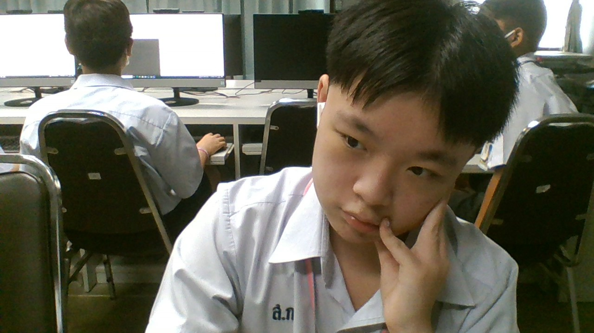

นางสาวสุพรรณมณี ใจสุข ขอบคุณนะคับ
บทเพลงที่มอบให้ครู

นายนัชชา ยืนยงอนันต์ ขอบคุณนะคับ
บทเพลงที่มอบให้ครู

นายอังกิณัญญ์ เป็ดสุวรรณ ขอบคุณนะคับ
บทเพลงที่มอบให้ครู

น.ส.มาริษา วัฒนธรรม ขอบคุณที่ให้ความสนุกในคาบทุกครั้งนะคับ
บทเพลงที่มอบให้ครู

นางเกศสุดา นันทชัย ขอบคุณที่ให้ความสนุกในคาบทุกครั้งนะคับ
บทเพลงที่มอบให้ครู

วิกรม เดชาวรานุภาพ